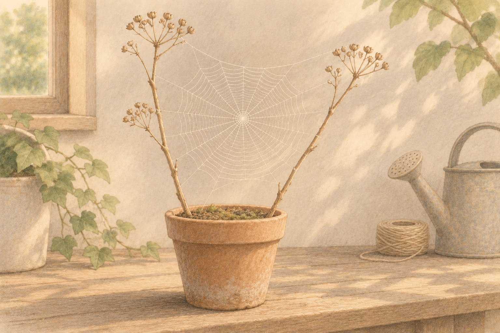

01Which lines are sticky on an orb web?

Look closer. Find the center hub, the straight lines that go out like spokes, and the spiral that winds around them.
A little explanation. On many orb webs, the spokes (radii) and the small hub are dry and strong. The outer spiral often holds tiny glue beads. Spiders walk the dry lines and feel prey on the sticky spiral. Not every web is an orb, and not every spiral is sticky the same way.
Try this. From a few steps away, sketch a web you can see. Mark the hub, three spokes, and one loop of the spiral. Do not touch the silk.